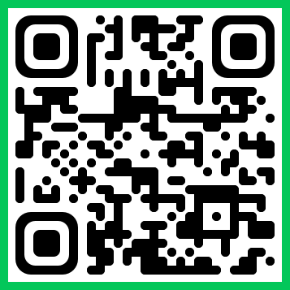

초등학생의 학습 경험과 도움요청 행동에 관한 설문 안내
선생님, 안녕하세요.
바쁜 교육 활동 중에 연구에 도움을 주셔서 진심으로 감사드립니다.
본 설문은 초등학생의 학습 경험, 학습 상황에서의 생각, 도움요청 행동을 알아보기 위한 연구 목적으로 실시됩니다.
학생들에게 설문을 실시하시기 전, 아래의 지침을 먼저 숙지해 주시면 연구에 큰 도움이 되겠습니다.
안내
페이지 하단에 설문 QR코드 및 링크가 있습니다.
연구의 신뢰도를 위해 아래 지침 내용은 학생들에게 그대로 노출하지 않도록 유의해 주시기 바랍니다.
1. 검사 실시 전 유의 사항
- 본 조사는 정답이 없는 인식 조사임을 안내해 주십시오.
- 학생들이 평소 자신의 생각과 경험에 가깝게 솔직하게 응답할 수 있도록 허용적인 분위기를 조성해 주십시오.
- 설문 참여는 자발적으로 이루어지며, 참여하지 않거나 중간에 그만두더라도 어떠한 불이익도 없음을 안내해 주십시오.
- 개인을 식별할 수 있는 정보는 수집하지 않으며, 응답 내용은 연구 목적으로만 활용됩니다.
2. 학생 질의 대응 가이드
학생이 문항의 의미를 질문하는 경우, 연구자의 의도와 다르게 특정 응답을 유도하지 않도록
가능한 한 문항을 다시 천천히 읽어 보도록 안내해 주십시오.
표준 답변 예시
“정답이 있는 문제가 아니니, 문장을 천천히 읽고 평소 자신의 생각과 가장 가까운 곳에 표시하면 됩니다.”
3. 설문 실시 방법
- 학생들이 개인별로 온라인 설문에 접속하여 응답하도록 안내해 주십시오.
- 예상 소요 시간은 약 10~15분입니다.
- 설문 중 학생 간 응답을 비교하거나 서로 이야기하지 않도록 지도해 주십시오.
4. 설문 참여 링크
아래 버튼을 누르거나 QR코드를 스캔하면 설문 페이지로 이동합니다.
설문지 직접 접속 링크

QR코드를 누르면 크게 볼 수 있습니다.